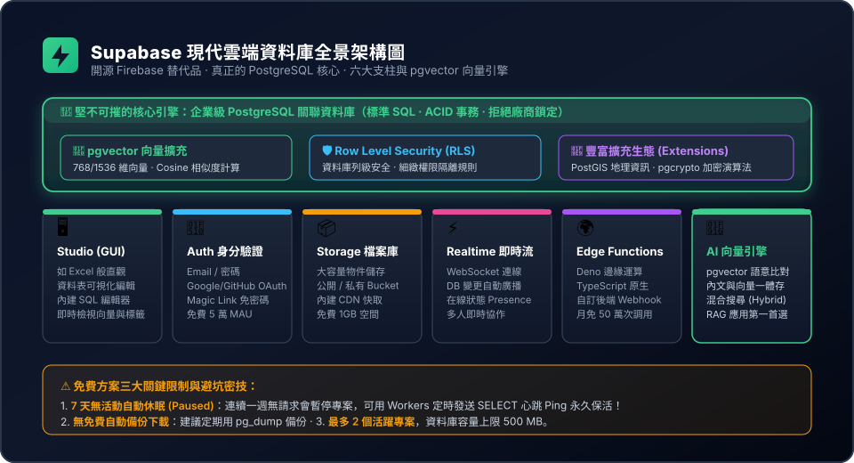

開源 Firebase 替代品 · 真正的 PostgreSQL 核心 · pgvector 向量引擎與免費保活密技
不是模仿品！每個專案都是一座獨立完整的企業級 PostgreSQL，支援標準 SQL、ACID 事務與龐大開源生態，拒絕廠商綁架。
AI 時代必備！支援 768 / 1536 維向量儲存，手冊內文與向量存於同一張表，一趟查詢直接回傳文章，支援混合檢索。
破解免費版 7 天無活動自動休眠限制！利用 Cloudflare Workers Cron 定時心跳 Ping，讓專案永久活躍、永不暫停。
從專有封閉走向開源標準，徹底擺脫雲端大廠供應商鎖定（Vendor Lock-in）
pg_dump 導出備份，隨意搬到 AWS、GCP 或本地。pgvector 擴充，天然就是最強大的企業知識庫後盾！點擊圖片可進入滿版放大檢視

不再需要黑底終端機敲指令，現代全端開發享受如 Excel 般的直覺體驗
網頁視覺化管理後台
媲美 Airtable 與 Excel 的資料表編輯器（Table Editor），直接點選修改資料、設定外鍵關聯。內建 AI 輔助 SQL 編輯器，一鍵執行複雜腳本！
開箱即用身分驗證
支援 Email、Magic Link 免密碼信件，以及 Google、GitHub 等 20+ 種 OAuth。搭配 Row-Level Security (RLS)，在資料庫底層直接防範越權存取！
大容量檔案與圖片儲存
提供 Public（公開）與 Private（私有授權）儲存桶（Buckets），內建全球 CDN 快取分發，並支援在 URL 帶參數即時裁切壓縮圖片。
打造毫秒推播、邊緣中繼與 AI 知識庫的核心動力
免重新整理 WebSocket 推播
即時監聽資料庫的 INSERT、UPDATE、DELETE 事件！前端網頁在幾毫秒內自動收到廣播，支援在線狀態（Presence）與多人即時聊天。
基於 Deno 的邊緣無伺服器計算
使用 TypeScript 原生編寫，運行在全球邊緣節點。近乎零冷啟動延遲，非常適合處理第三方金流 Webhook、寄信或中繼 AI API 呼叫。
AI 時代核心武器
在同一個關聯資料庫中原生儲存與比對高維度語意向量，手冊原文、標籤與向量存於同張表，為第 11 章 RAG 實戰奠定基礎！
如何讓傳統的關聯資料庫，擁有「理解語意相似度」的超能力？
在 Supabase SQL 編輯器中只需一行指令即可開啟：
create extension if not exists vector;
宣告 vector(768) 欄位，即可在每一筆手冊紀錄旁，存放 Google Gemini Embedding 產生的 768 維浮點數陣列。
當新人提問：「確診可以請假幾天？」
系統將問題轉成 768 維向量，資料庫透過幾何數學計算「兩個向量在高維空間中的距離」，即便文字沒有完全重疊，也能在毫秒內抓出「4.1 傷病假與快篩陽性通報」！
數學幾何距離決定最相似段落，多層圖狀索引實現毫秒級海量檢索
<=>
Cosine Distance
衡量兩向量的方向夾角。值介於 0 到 2 之間，值越小代表語意越相近！
相似度轉換公式：
相似度 = 1 - (A <=> B)
<->
L2 / Euclidean Distance
計算空間兩點之間的直線幾何距離。適合在點座標空間中衡量物理長度差異。
<#>
Negative Inner Product
若輸入的向量已經過正規化（長度為 1），內積計算速度最快，常在超高效能場景使用。
當手冊段落達數萬筆時，逐一比對會變慢。HNSW（分層可導航小世界）建立多層高維導航圖，查詢速度極快且召回率（Recall）極高，一建好後即可動態寫入新資料：
create index on handbook_documents using hnsw (embedding vector_cosine_ops);
在全端企業知識庫中，純向量庫與全功能關聯資料庫有著本質差異！
| 評比項目 | Supabase (PostgreSQL + pgvector) | Cloudflare Vectorize / Pinecone |
|---|---|---|
| 資料庫本質 | 全功能關聯式資料庫（PostgreSQL） | 純向量索引引擎（Vector Index） |
| 原始長文字儲存 | 完美支援！Markdown 完整手冊與向量存同表 | 不支援存長文！只存 ID 與簡短 metadata |
| 查詢步驟 (Roundtrips) | 1 趟搞定（查相似度時直接回傳手冊文字） | 2 階段查詢（先查出 ID ➔ 再到 D1/KV 撈文章） |
| 混合搜尋 (Hybrid) | 原生支援！全文關鍵字檢索 + 向量雙軌融合 | 僅支援純向量相似度與簡易標籤過濾 |
| 可視化除錯後台 | 內建如 Excel 般的直觀網頁編輯器 | 主要依賴指令列（CLI）或簡易儀表板 |
足夠支撐中小型專案、企業內部 POC 試行與個人作品集
| 服務功能項目 | 免費方案配額 (Free Tier) | 實務估算與說明 |
|---|---|---|
| 活躍專案數量 | 最多 2 個專案 | 每個帳號同時最多維護 2 個活躍專案。 |
| 資料庫儲存容量 (Database) | 500 MB | 純文字與 768 維向量可存數萬筆手冊段落。 |
| Auth 活躍使用者 (MAU) | 50,000 MAU / 月 | 每月 5 萬名獨立登入同仁，中小企業完全不用擔心超標。 |
| Storage 檔案庫空間 | 1 GB（單檔上限 50 MB） | 大容量檔案（如大圖、影片）建議搭配 Cloudflare R2。 |
| 出站網路流量 (Egress) | 2 GB / 月 | 純文字與 JSON 回傳綽綽有餘。 |
| Edge Functions 調用 | 500,000 次 / 月 | 每月 50 萬次邊緣無伺服器計算執行額度。 |
專案突然連不上、API 報錯？原來是觸發了官方的伺服器節能休眠機制！
Paused 暫停狀態。Database connection error。既然 7 天無活動會休眠，我們就讓邊緣機器人每天定時幫它「把脈」一次！
利用 Cloudflare Workers 免費的 Cron Trigger（排程觸發器），或 Google Apps Script：
設定每天清晨 4:00 自動向 Supabase 執行一次極輕量的查詢（如 SELECT 1; 或檢查手冊筆數）。
系統判定「始終有活動」，專案即可永久保持活躍、永不休眠！
「AntiGravity，請幫我寫一個輕量級的 Cloudflare Workers 心跳腳本，設定 Cron Trigger 每天清晨向 Supabase 執行一次輕量 SELECT 查詢，並提供 wrangler.toml 設定與 index.js 完整代碼！」
防患於未然！學會純正 PostgreSQL 的備份外掛與檔案分流策略
【官方機制】：付費方案享有每日常規自動備份下載與 PITR（時間點還原）；免費方案雖然資料完整，但後台不提供下載 .dump 備份檔的按鈕！
💡 破解秘技：因為它是標準 PostgreSQL，請 AntiGravity 寫一個排程腳本使用 pg_dump，每週自動把手冊內文與資料表結構匯出成 backup.sql 存到本地硬碟或 GitHub 私有庫。
【官方機制】：免費資料庫磁碟上限為 500 MB。
💡 破解秘技：對於 PDF 掃描檔、大圖或影片，絕對不要轉成 Base64 字串直接塞進資料庫欄位！
正確做法是將大檔案上傳到 Cloudflare R2（免流量費） 或 Supabase Storage，資料表內只存放網址 URL，500 MB 足夠存入數百萬字的文章與向量！
自動建表、執行 Migration 遷移、產生 TypeScript 型別與手冊入庫
sbp_...)。npx supabase login --token 你的Token。npx supabase link --project-ref 專案ID 綁定專案。npx supabase gen types typescript 自動產生全端 100% 精確的 TypeScript 資料表型別！.env：SUPABASE_URL=https://xyz.supabase.coSUPABASE_SERVICE_ROLE_KEY=eyJh...
scripts/ingest.js，以最高權限批次將手冊切塊向量寫入資料表！第 9 章邊緣平台 + 第 10 章向量資料庫已就緒，下一章迎戰私有 NotebookLM！
<=> 與 HNSW 索引。
企業內部智慧新人導航庫（私有化 NotebookLM）
四核聯動重磅登場：
🌐 Cloudflare Pages 雙欄現代前端門面
⚡ Cloudflare Workers 邊緣大腦與金鑰保險庫
🐘 Supabase (pgvector) 4 本員工守則向量庫
🤖 Google Gemini API 嚴格接地、附帶章節出處、絕不幻覺！